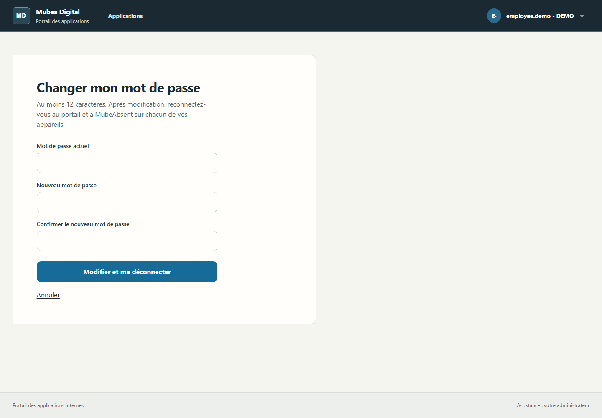
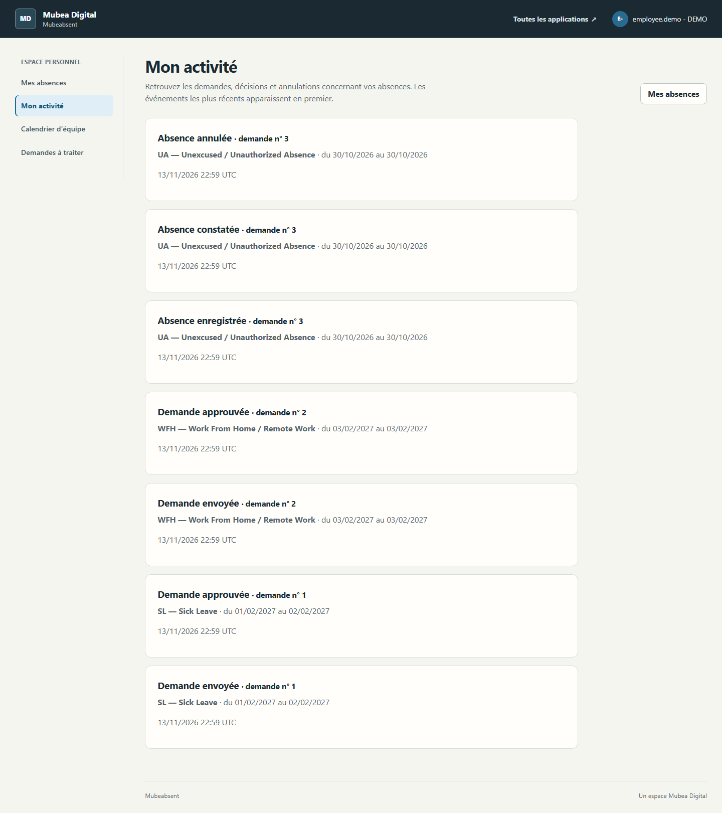
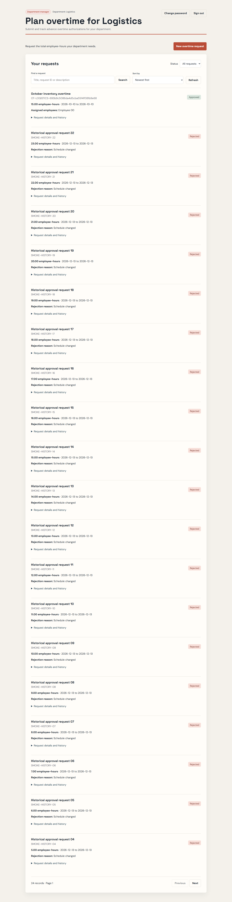
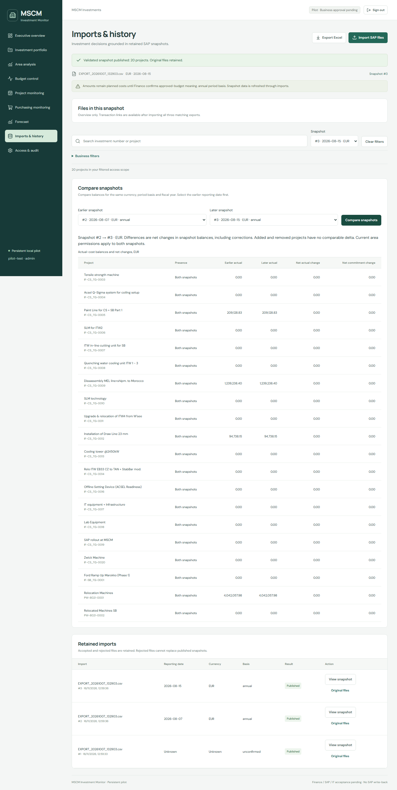

Six workstreams.
Progress and the decisions ahead.
Local technical completion and business acceptance are tracked separately. Updated 16 November 2026; no new go-live dates are assumed.
The programme in 30 seconds
Select a project for delivered scope, evidence and job stoppers. These source changes are not a production deployment.
| Project | Current state | Next step |
|---|---|---|
| Mubea Portal | Local verification passed | IT confirms the host, domain, HTTPS, backups and operational owner. |
| MubeAbsent | HR validation pending | HR confirms deductions, eligibility, supporting documents, balances, employee data and the first release scope. |
| Overtime Management System | Local workflow verified | Configure and verify the production host, PostgreSQL, sender and notification scheduler with IT. |
| MSCM Faucon / Investment Monitor | Finance validation pending | Finance confirms currency, reporting period and budget definitions, then supplies compatible historical snapshots and project owners/dates. |
| Mubea Technician Dashboard | SAP / Bluebird assessment | PM, Production and IT assess whether SAP meets the technician dashboard requirements or Bluebird should provide the solution. Use the documented tool-tracking process for the assessment. |
| Spare-parts / MRP | Local verification passed | Validate physical stock, locations, classifications and the receiving/issuing workflow with the inventory owner; complete scanner and label-printer acceptance. |
What completion means
A passing build verifies software. HR and Finance validate business rules; IT confirms deployment, access and operations. Historical October plans remain historical and are not renewed as commitments.
Project detail and job stoppers
Mubea PortalLocal verification passedFull detail
Delivered
Application catalogue, accounts and roles. Added self-service password changes and immediate revocation of existing Portal and MubeAbsent sessions, including after administrator password resets.
Verification
197 automated tests passed. Browser verification uses isolated demo accounts.

MubeAbsentHR validation pendingFull detail
Delivered
15 absence codes, configurable rules, employee requests, scoped manager decisions, private team calendar, administrative UA records and reversals. Added a personal activity feed; comments and other employees' events are excluded.
Verification
86 automated tests passed. Policy defaults remain unconfirmed until HR validates them.

Overtime Management SystemLocal workflow verifiedFull detail
Delivered
Submission, approval, HR assignment, reviewed CSV export, account administration and notification outbox. Browser login now uses HttpOnly session cookies with CSRF protection; existing token API clients remain supported.
Verification
87 backend tests passed; three PostgreSQL-only concurrency tests skipped on local SQLite. Frontend build and isolated browser workflow passed.

MSCM Faucon / Investment MonitorFinance validation pendingFull detail
Delivered
Three-file SAP import linked by project and WBS identifiers, reconciliation, access scopes, procurement and planning records. Added comparison of compatible dated snapshots using exact decimal amounts; missing projects have no invented delta.
Verification
27 backend tests passed and frontend build passed. Existing owner data remains unchanged.

Mubea Technician DashboardSAP / Bluebird assessmentFull detail
Delivered
Existing inventory, scanning, labels, assignments, overdue returns and buying guide. Added separate liveness and database-readiness endpoints with generic responses and no user data.
Verification
17 tests passed and Next.js production build passed. The configured database ping succeeded; local readiness correctly returns 503 while a session signing secret is missing. Production deployment is not verified.
Spare-parts / MRPLocal verification passedFull detail
Delivered
Existing inventory, machine/line classification and Italy workbook import. Added a read-only assessment export: typed data, photos, quality exceptions and SHA-256 manifest. Accounts, passwords and sessions are excluded.
Verification
26 tests passed and production build passed. Shared stock remains one balance even when a part has multiple machine links.
Decisions needed to proceed
- HR: absence rules, balances, employee data and overtime workflow acceptance.
- Finance / SAP: Faucon definitions, reporting periods and approved project information.
- PM / Production / IT: assess SAP fit or Bluebird for the Mubea technician dashboard and agree process ownership. Anna's 1–2 day Bluebird estimate is not a committed delivery date.
- Inventory owner: validate spare-parts/MRP stock, locations and hardware workflows.
- IT / application owners: hosting, HTTPS, corporate identity, backups, monitoring, notification sender and scheduling.
Verification evidence
Results are listed per project because the suites cover different runtimes and scopes. PostgreSQL concurrency tests and production acceptance are not implied by local SQLite checks.
The screenshots use isolated demo accounts. Existing live services and owner databases were not replaced. The 30 October progress report remains a historical record.